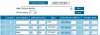

Parfois, on a envie d'avoir le contrôle sur tout, d'être le maître, de tout configurer ou tout simplement de voir comment ça marche. Si vous jouez souvent à Counter-Strike, avoir votre propre serveur à vous vous est peut-être déjà venu à l'idée. Si l'aventure vous tente, suivez ce tutoriel qui va vous apprendre comment créer votre propre serveur dédié pour Counter-Strike. Vous aurez enfin le plaisir de kicker vous-même les méchants. :p
Comme toujours, on commence par l'installation. Bah oui, avant de s'en servir, va bien falloir l'installer, ce fameux serveur. :p Commençons déjà par voir les différentes possibilités qui s'offrent à vous pour installer un serveur dédié...
C'est bien beau de vouloir mettre en place un serveur, mais il faut déjà savoir si votre ordinateur et votre connexion vous en donnent les moyens. :p
Tout d'abord, la puissance de l'ordinateur qui va accueillir le serveur. Bien évidemment, plus il est puissant, mieux c'est, mais un ordinateur très vieux (du moment qu'il ne tourne pas sous Windows 3.1 avec un processeur qui tourne à 64 Mhz !) fera l'affaire si vous désirez mettre en place un serveur modeste. Ce sont surtout la puissance du processeur et la quantité de RAM qui seront les plus importants. Bien sûr, un PC de faible puissance ne pourra pas supporter une tonne de joueurs en même temps, et ramera pas mal lors du changement de map. Mais dites vous bien qu'il est inutile de s'offrir du haut de gamme pour ce genre de choses !
Si vous avez un ordinateur qui fonctionne encore mais qui ne sert à rien, c'est l'occasion rêvée de s'en servir : rien ne vaut un ordinateur dédié... au serveur dédié ! En gros, le mieux, c'est d'avoir un PC sous la main qui ne servira quasiment qu'à héberger le serveur, mais ce n'est pas une obligation.
Deuxièmement, la vitesse de votre connexion représente un autre poids dans la balance. Inutile d'espérer héberger un serveur si vous surfez encore avec un 56 k ! L'ADSL (ou tout autre technologie dite "haut débit") est en général suffisant : 128 k d'upload feront l'affaire si vous n'êtes pas trop gourmands au niveau du nombre de joueurs. Mais bien sûr, plus ça va vite, mieux ça sera, et plus vous pourrez héberger de joueurs.
La vitesse de votre connexion aura également une autre influence : celle à laquelle les autres joueurs téléchargeront les fichiers de votre serveur. Comme vous le savez déjà, Steam télécharge automatiquement la map en cours sur le serveur auquel vous vous connectez si vous ne la possédez pas déjà, de même que d'autres fichiers. Si votre débit d'upload est trop lent, les joueurs risquent d'y passer des heures ! Prenez donc en compte ce paramètre si votre connexion est plutôt lente : ne mettez pas des tonnes de fichiers sur votre serveur, et des maps qui pèsent des tas de Méga-octets.
Pour finir, il vous faudra un dernier élément pour jouer sur votre serveur : Steam. Il ne vous faudra pas l'installer sur l'ordinateur qui hébergera le serveur, mais tous ceux qui voudront y entrer (vous y compris) devront posséder Steam, avec évidemment une version de Counter-Strike valide. Si vous possédez un Counter-Strike illégal (obtenu avec des méthodes douteuses pour l'ajouter gratuitement à votre liste de jeux Steam, par exemple), ne rêvez pas, vous ne pourrez pas entrer sur votre serveur. Si ce n'était pas évident pour vous que vous deviez être dans la légalité, vous êtes maintenant au courant ;) . Même si vous possèdez une version légale de Counter-Strike, mais que vous utilisez la version 1.5 pour jouer sur les serveurs WON, vous ne pourrez de toute façon pas non plus accéder à votre serveur. Il va donc absolument falloir télécharger Steam, et utiliser Counter-Strike à travers cette application. C'est comme ça !
Même si je déconseille cette option, il est possible de créer un serveur dédié directement à partir de Steam. Cette solution est la plus simple et la plus rapide à mettre en ?uvre, mais...
Dans ce cas, pas d'hésitation ! On passe par Steam, non ?
Laissez-moi finir, bande de pressés :p . Je disais donc que, même si vous pouvez installer un serveur dédié avec Steam, cette option ne sera pas la plus pratique par la suite, puisque vous ne pourrez pas avoir un accès complet à la configuration du serveur. De plus, faire tourner le serveur dédié en même temps que vous jouez à un jeu est déconseillé, puisque le serveur réclame beaucoup de ressources. Bref, la solution Steam n'est utilisable que si vous désirez "prêter" votre ordinateur à des amis pour qu'ils se fassent une petite partie rapidement, pendant que vous faites autre chose. Mais si vous désirez un vrai serveur où vous pourrez tout configurer et où vous pourrez jouer, passez plutôt à la seconde méthode.
La manipulation est très simple : vous démarrez Steam, puis vous cliquez sur l'onglet "Outils" en haut. Là, vous double-cliquez sur "Dedicated Server", et enfin, sur "Télécharger et installer". Si vous voulez faire un serveur pour un jeu Source (comme Counter-Strike : Source ou Half Life 2 Deathmatch), l'opération est la même, choisissez juste "Source Dedicated Server".
Après un très court chargement, l'option apparaît dans le menu, et vous n'avez plus qu'à double-cliquer pour démarrer. Vous êtes alors confrontés à l'écran de configuration, dont on reparlera dans la prochaine partie. En gros, vous avez terminé, vous pouvez passer à la partie suivante. :p Mais attention, rappelez-vous bien que vous ne pourrez pas faire tout ce qui est décrit dans ce tutoriel avec cette méthode... Venez pas vous plaindre par la suite, hein :D .
Derrière ce nom barbare, se cache un programme bien pratique qui va nous servir à installer le serveur. En gros, vous allez devoir installer un logiciel qui va ensuite installer autre chose ! Oui, ça paraît compliqué, mais ne vous inquiétez pas, ça va aller tout en douceur. :p Première étape, rendez-vous sur cette page, et cliquez sur Windows HLDS Update Tool. Téléchargez le programme, et exécutez-le normalement, en suivant l'installation comme n'importe quel programme habituel.
Rendez-vous à présent dans le répertoire que vous avez choisi pour l'installation, vous y trouverez un fichier appelé HldsUpdateTool.exe, sur lequel vous n'avez qu'à double-cliquer, pour voir. Le logiciel va se mettre à jour puis se fermer quand il aura terminé sa petite affaire... On l'exécute à nouveau, et...
Argh ! Ça s'est affiché tellement vite que j'ai pas eu le temps de réagir !
Pas d'inquiétude, c'est normal. Le programme attend de vous ce qu'on appelle des arguments, mais il va falloir passer par la ligne de commande pour les lui donner. Pour ça, on va utiliser un fichier .bat. Prenez le Bloc-notes, et copiez-coller ce qui suit :
Puis enregistrez le fichier dans le même répertoire que le HldsUpdateTool.exe sous le nom "serveur.bat" (ou n'importe quoi d'autre, tant que ça se finit par .bat).
Pas d'inquiétude si vous ne voyez pas le ".bat" à la fin du nom du fichier : l'important, c'est que l'icône soit la même que sur l'image (ou une icône du même genre, avec un engrenage), et pas celle d'un fichier texte. Si c'est le cas, vous vous êtes trompés en enregistrant le fichier :p .
Si tout semble correct, nous pouvons maintenant lancer le script. Sous Windows XP, il suffit simplement de double-cliquer dessus. Sous Windows Vista ou 7, par contre, il est nécessaire de le lancer avec des privilèges plus élevés pour ne pas avoir de problèmes. Pour cela, faites un clic droit sur le fichier bat, et sélectionnez l'option Exécuter en tant qu'administrateur. Lorsque la fenêtre vous demandant confirmation apparait, cliquez sur Oui. Une fois le script lancé, vous pouvez faire une pause, ça peut durer un moment.
En attendant que tout soit installé, décortiquons ce que nous venons de taper. La première commande, mkdir c:\serveur, est assez évidente : elle crée le dossier serveur à la racine du disque C, qui sera utilisé pour l'installation. Si le dossier n'existe pas, l'installation plante, c'est pourquoi il nous faut le créer avant de continuer. La commande cd /d %~dp0 située juste après nous permet de nous rendre dans le répertoire où se trouve notre fichier bat, et par conséquent le programme d'installation du serveur. Sans cette commande, celui-ci ne se lancerait pas, car nous ne serions pas dans le bon répertoire. Elle ne sert cependant que pour Windows Vista et 7 lorsque vous lancez le script en tant qu'administrateur (mais vous pouvez la laisser même si vous utilisez Windows XP, elle ne devrait pas poser de problèmes). Ensuite, le -command update demande au programme une mise à jour (dans notre cas, c'est plutôt une installation, mais c'est pareil). Le -game cstrike indique qu'on veut un serveur pour Counter-Strike, et enfin le -dir c:\serveur indique l'endroit où sera installé le serveur. Pour finir, le pause nous sert uniquement à empêcher la fenêtre de se fermer quand le programme aura fini de s'exécuter, afin de s'assurer que tout s'est bien passé.
Quand l'installation sera terminée, vous verrez apparaître dans la fenêtre le message HLDS installation up-to-date. Si ce n'est pas le cas, il se peut que les serveurs de Steam soient surchargés, vous devrez alors patienter un petit peu avant de recommencer. De plus, si vous êtes du genre à avoir des doutes, n'hésitez pas à cliquer une seconde fois sur notre fichier .bat, histoire de s'assurer que le programme a bien tout téléchargé (ne vous inquiétez pas, il ne retéléchargera pas les fichiers déjà présents).
Direction le répertoire dont nous venons de parler (C:\serveur, à moins que vous n'ayez décidé de le changer), où vous devriez trouver tout un tas de fichiers. Vous devriez normalement y voir un programme hlds.exe portant l'icône de Half-Life. Félicitations, l'installation est terminée !
Hop, c'est installé ! Avant de vous précipiter pour lancer votre serveur, nous allons, dans la partie suivante, voir en détail comment le configurer pour qu'il s'accorde à vos besoins et envies.
Allez, je vois que vous êtes impatients de lancer le serveur, alors ne vous gênez pas. :p Double-cliquez sur le fichier hlds.exe afin de démarrer le programme qui va nous permettre de lancer et gérer notre beau serveur. Devant vos yeux ébahis apparaît une belle petite fenêtre, qui va nous permettre de configurer le serveur avant de le lancer. Voyons ça en détail...
Game : comme le nom l'indique, il s'agit du jeu qu'on veut utiliser sur notre serveur dédié. Seul Counter-Strike est disponible (puisqu'on a choisi de l'installer à l'étape précédente), mais vous êtes libres d'en installer d'autres par la suite. Nom du serveur : le nom du serveur ! C'est sous ce nom qu'apparaîtra le serveur dans la liste (des serveurs), alors choisissez-le bien. Vous pouvez, si vous le désirez, ajouter FR - devant le nom, pour que les francophones désirant un serveur francophone puissent le trouver plus facilement. Carte : la carte qui sera lancée en même temps que le serveur. Comme vous le voyez, le programme d'installation vous a aussi donné pas mal de maps, vous avez de quoi faire. Mais nous verrons par la suite que vous pouvez bien sûr en ajouter. Réseau : attention, choix important. Si vous choisissez LAN, votre serveur ne sera accessible qu'aux ordinateurs de votre réseau local. Si vous voulez par contre qu'il soit accessible à tous sur Internet, choisissez... Internet ! Joueurs max : le nombre de joueurs maximum qu'il peut y avoir simultanément sur le serveur. Comme je l'ai déjà dit, ce choix dépend de la puissance de votre ordinateur et de la vitesse de votre connexion. À vous d'expérimenter, mais bon, 32 joueurs ça fait vraiment beaucoup. :p Cependant, prenez toujours une valeur paire pour éviter que la partie soit déséquilibrée. UDP Port : le port qui sera utilisé par le serveur. Pour résumer, un port est une porte d'accès vers votre ordinateur, et il en existe un paquet qui sont pour la plupart fermés en temps normal. Bref, vous n'avez normalement pas besoin de toucher à cette valeur, des applications qui utilisent le port 27015, il ne doit pas y avoir beaucoup :D ! Mot de passe RC : en fait, c'est Mot de passe RCON, mais il en manque un morceau. Là encore, c'est important. Ce mot de passe va vous permettre de contrôler votre serveur à distance, pendant que vous jouez à Counter-Strike. Évitez les mots de passe trop simples, car sinon, celui qui le trouvera pourra par exemple kicker ou bannir n'importe qui. Mais bon, ne vous affolez pas non plus, un mot de plusieurs lettres sera bien suffisant :p . Secure : cocher cette case activera le système de protection de chez Valve. Celui-ci empêche les joueurs de tricher, à l'aide de certains programmes par exemple, et bloque l'entrée aux personnes bannies pour triche. Normalement, vous n'avez pas de raison de la désactiver.
Et maintenant on clique sur Annuler... Ah non, c'est l'autre bouton, vous êtes sûrs ? Bon, bah, cliquez sur Lancer le serveur (même s'il en manque un morceau). Après un petit chargement, votre serveur sera lancé !
Votre serveur est à présent lancé, et même fonctionnel. Si vous voulez, vous pouvez aller le tester maintenant, ça devrait fonctionner sans problème. Cependant, il nous reste encore un peu de configuration à faire...
Argh ! J'ai voulu faire venir mes amis sur mon serveur, mais ils n'arrivent pas à entrer ! Qu'est-ce qui se passe ? J'ai mal fait quelque chose :( ?
Pas d'inquiétude, c'est un problème très commun. Si vos amis ne peuvent pas entrer sur votre serveur, c'est que vous devez régler certains problèmes avec votre ordinateur ou votre réseau. Pour cela, je vous invite à vous rendre dans la partie Annexes de ce tutorial, qui contient tout ce qu'il faut vérifier et faire afin de permettre à vos amis d'entrer.
Après ce petit intermède, nous pouvons retourner à la configuration de notre serveur... Voilà donc ce qui devrait apparaître sur votre écran, une fois le serveur lancé. Si vous ne voyez pas l'onglet Console, c'est parce que la fenêtre est trop petite. Augmentez sa taille en cliquant en bas à droite, puis maintenez et faites glisser vers la droite jusqu'à ce que l'onglet apparaisse. Bon, voyons ce que nous offre l'onglet Paramètre principaux... Le champ Partie vous indique le jeu qui tourne actuellement, et le champ Joueurs le nombre de joueurs actuellement connectés. Le champ Adresse IP vous indique l'adresse IP de l'ordinateur. Si vous êtes connectés directement à Internet, vous pourrez communiquer cette adresse à vos amis. Cependant, si vous n'accédez pas directement à Internet (en passant par un routeur par exemple), l'adresse IP affichée est celle de votre ordinateur sur le réseau local (elle a alors la forme 192.168 ou 10.0). Donner cette adresse IP à vos amis ne servirait à rien, ils ne pourraient pas accéder à votre serveur.
Enfin, le champ Uptime vous indique la durée depuis le démarrage du serveur.
Jetez un ?il à la partie basse de la fenêtre. Vous connaissez déjà la plupart des éléments qu'on y trouve, je ne vais donc pas y revenir, mais sachez que vous pouvez les changer à tout moment en double-cliquant dessus. Ainsi, si vous voulez changer la map qui tourne actuellement, double-cliquez sur Map puis choisissez-en une autre dans la liste, puis cliquez sur OK pour que la map se lance.
Les deux derniers éléments sont nouveaux par contre. Player Password vous permet de mettre en place un mot de passe qui sera demandé à tout joueur souhaitant se connecter au serveur. Utile si vous ne voulez pas voir de parfaits inconnus débarquer, mais n'oubliez pas de communiquer le mot de passe à vos amis. Map Cycle vous permet de gérer la liste des maps jouées par le serveur. Double-cliquez dessus pour y avoir accès. A gauche se trouve la liste des maps disponibles, mais non présentes dans la liste, et à droite, les maps jouées sur le serveur. Pour ajouter ou retirer des maps, vous n'avez qu'à les sélectionner puis à cliquer sur la flèche. Vous pouvez choisir plusieurs maps en maintenant la touche Control, ou directement un ensemble en maintenant Alt.
Passons donc au second onglet, Configurer.
Time limit indique la limite de temps avant que le serveur ne passe à la map suivante. Une durée trop courte risque d'être problématique, mais si c'est au contraire trop long, les joueurs risquent de se plaindre. Win limit définit le nombre de rounds gagnant avant le passage à la map suivante. Si une des teams gagne le nombre de rounds défini, c'est fini. Round limit définit le nombre de rounds joués avant le passage à la map suivante, peu importe par qui ils sont gagnés. Veillez à mettre une valeur impaire pour éviter de finir sur un match nul. Il vous est possible de régler les trois valeurs en même temps, ou une seule. Vous pouvez par exemple enlever la limite de temps, et ne mettre qu'une limite de rounds. A vous de voir !
Time per round définit la durée maximum d'un round. Si personne n'a gagné une fois la durée atteinte, on passe au round suivant. En général, la valeur par défaut, 5 minutes, est très correcte. Freeze time, c'est la durée pendant laquelle les joueurs sont bloqués sur place, avant que le round ne commence. Cela leur laisse un peu de temps pour acheter des armes et repérer le terrain. Là aussi, la valeur par défaut fait l'affaire. Buy Time est le temps pendant lequel les joueurs peuvent acheter des choses dans leur zone d'achat. La valeur par défaut devrait convenir à tous. starting money est la somme avec laquelle démarre chaque joueur au début de la map. Libre à vous de l'augmenter ou de la diminuer... Footsteps définit l'activation ou non des bruits de pas. Si vous le réglez sur Disabled, les joueurs ne feront plus de bruit en marchant. On y perd en réalisme dans ce cas, mais la discrétion est alors renforcée. Death Camera Type définit ce que pourra voir un joueur mort. Spectate anyone n'impose aucune restriction, Spectate team only l'empêche d'observer l'autre équipe, et first person only le limite à une seule caméra : celle à la première personne, comme pendant le jeu. Disable chase / death cam vous permet carrément de désactiver l'option permettant d'observer la partie quand le joueur est mort : il se retrouve alors juste devant un écran noir. Il est franchement déconseillé de le désactiver, c'est pas drôle de ne rien voir du tout quand on est mort, alors que les autres s'amusent encore :p . Friendly fire se rapporte au "tir ami". Si l'option est désactivée, les membres de la même équipe ne peuvent pas se tuer en se tirant dessus. C'est plus amusant de le laisser activé, puisque ça oblige à faire attention où on tire... Kill team killer... tuera automatiquement au round suivant les joueurs ayant tué quelqu'un de leur équipe, même si c'était involontaire. On l'active généralement. Kick idle and team killing... kickera hors du serveur les joueurs inactifs depuis un certain temps, et ceux qui ont tué trois membres de leur équipe ou plus. Une telle valeur permet d'éviter les erreurs judiciaires parce qu'un joueur a mal visé par mégarde ;) . Kick hostage killers kickera automatiquement les joueurs qui tuent un nombre défini d'otages. Si vous voulez désactiver cette option, mettez la valeur 0. Allow flashlight autorise ou non l'utilisation de la lampe torche. Les joueurs pourront ainsi mieux voir dans les endroits sombres s'ils l'activent, mais ils seront aussi plus faciles à repérer... Je ne vois pas de raison de ne pas activer cette option, mais bon.
Pfiou, vous êtes encore là ? J'espère bien :p . Maintenant, vous devez avoir en tête la configuration que vous désirez pour votre serveur, puisqu'on va maintenant le configurer pour de vrai...
Nous allons maintenant nous intéresser à quelques fichiers qui vont nous être utiles afin de configurer le serveur. Fermez donc le serveur, le temps qu'on jette un Sil à tout ça :p .
server.cfg
Ce fichier se trouve dans le dossier cstrike, dossier qui se trouve au même endroit que le programme permettant de lancer le serveur. Il va nous permettre de configurer de façon plus permanente le serveur.
Le fichier ne contient que deux choses intéressantes à modifier : ce sont mp_timelimit 20 qui correspond à la durée d'une partie, l'équivalent au Time limit de l'onglet 'Configurer' du serveur, et hostname, qui définit le nom de votre serveur. Voici donc la liste des variables que vous pouvez introduire dans ce fichier, avec une explication et les différentes valeurs possibles. Toutes ces variables sont à insérer à la fin de votre fichier server.cfg. Si une variable n'est pas dans le fichier, c'est la valeur par défaut qui sera utilisée. Si les réglages par défaut ont une valeur vous convenant, il est alors inutile de les mettre ici. Dernière chose, la plupart du temps, 1 = Activé et 0 = Désactivé.
Configuration générale
Variable
Explication
Valeurs possibles
sv_alltalk
Autorise le joueur à parler à l'autre équipe
0 ou 1
sv_voiceenable
Autorise les joueurs à se parler (par la voix :p )
0 ou 1
sv_password
Mot de passe pour accéder au serveur
Mot de passe entre " (ex : sv_password "zero")
sv_lan
Limitation de l'accès au réseau local
0 ou 1
Configuration du gameplay
sv_gravity
Gravité que subiront les joueurs
Un nombre, 800 par défaut
mp_startmoney
Argent de départ
Un nombre (en dollars)
mp_hostagepenalty
Nombre d'otages max. pouvant être tués
Un nombre ou 0 pour désactiver
mp_footsteps
Bruits de pas
0 ou 1
mp_flashlight
Lampe torche
0 ou 1
mp_falldamage
Dommage à cause d'une chute
0 ou 1
mp_c4timer
Temps avant l'explosion de la bombe
Un nombre (en secondes)
Configuration du temps
mp_chattime
Temps pendant lequel les joueurs peuvent discuter à la fin d'une map
Un nombre (en secondes)
mp_winlimit
Rounds max. gagnés avant de passer à la map suivante
Un nombre, 0 pour désactiver
mp_timelimit
Limite de temps avant de passer à la map suivante
Un nombre (en minutes), 0 pour pas de limite
mp_maxrounds
Rounds max. avant de passer à la map suivante
Un nombre, 0 pour désactiver
mp_freezetime
Temps pendant lequel les joueurs sont bloqués avant de démarrer
Un nombre (en secondes)
mp_buytime
Temps pendant lequel l'achat est autorisé
Un nombre (en minutes)
Configuration des équipes
mp_limitteams
Nbr. de joueurs max qu'une équipe peut avoir de plus par rapport à l'autre
Un nombre, 0 pour désactiver
mp_autoteambalance
Équilibre le nombre de joueurs entre les deux équipes
0 ou 1
Configuration de la gestion des joueurs
sv_timeout
Temps avant de kicker un joueur complètement inactif
Un nombre (en secondes)
mp_friendlyfire
Les joueurs d'une même équipe peuvent se blesser entre eux
0 ou 1
mp_tkpunish
Tue automatiquement les team killers au round suivant
0 ou 1
mp_autokick
Kick. auto des team killers et des joueurs inactifs
Woula, ça en fait des valeurs ! Mais ne les négligez pas, elles sont très importantes pour que votre serveur soit à votre goût et ne ressemble à aucun autre ^^ .
mapcycle.txt
Le mapcycle.txt se trouve lui aussi dans le dossier cstrike. Il définit la liste des maps qui seront jouées sur le serveur, et dans quel ordre elle le seront. Jetez-y un coup d'Sil : il faut passer à la ligne avant chaque map.
En quoi ce fichier est important ? On peut déjà régler le mapcycle à partir du serveur !
Certes :p , mais en manipulant ce fichier, vous pourrez avoir des listes de maps différentes, que vous pouvez changer à tout moment. Vous pouvez par exemple faire un fichier mapcyclede.txt qui ne contiendra que des maps Defuse. Quand vous voulez "activer" ce mapcycle, il suffit de le renommer en mapcycle.txt . Plus facile que de le faire à la main avec le serveur ! Petite information au passage : je ne sais pas si c'est un problème chez moi, mais le serveur efface le mapcycle quand on essaye d'y ajouter un nombre important de maps. Si ça vous arrive à vous aussi, voici un petit programme disponible à cette adresse qui vous évitera de le remplir à la main. Il est très simple d'utilisation, vous devriez vous en sortir tout seuls :p .
motd.txt
Oh bah tiens, lui aussi il est dans le dossier cstrike ! Ce fichier vous permet de régler le petit message que les joueurs voient apparaître avant d'entrer sur votre serveur. Pensez à le modifier pour donner encore plus de personnalité à votre serveur, d'autant plus que le message par défaut est assez moche. ;)
Ce fichier est utilisé pour faire une présentation rapide de votre serveur, pour y donner les règles et ce genre de choses. Si vous l'ouvrez, vous vous rendrez compte qu'il s'agit simplement... d'une page web en HTML ! Counter-Strike ne fait en effet qu'afficher le HTML comme n'importe quel navigateur quand il ouvre le fichier. Bref, vous pouvez le modifier à la main ou avec n'importe quel autre éditeur de pages web, y mettre du texte, des images et tout ce genre de choses. Comme une vraie page web, en somme !
Évidemment, tout serveur qui se respecte se doit d'avoir une petite collection de maps bien sympathiques ! Avec le serveur, vous avez eu droit à quelques maps de base archi-connues, mais toujours aussi populaires. Cependant, rien ne vous empêche d'en rajouter à votre guise. Nous allons voir ça...
Bref, l'opération n'a rien de compliqué : c'est tout comme ajouter une map quand vous souhaitez jouer (bien que ça se fasse moins de nos jours avec le téléchargement automatique). Il vous suffit de télécharger les maps souhaitées, puis de les mettre (au format bsp, bien sûr) dans le dossier maps situé dans le dossier cstrike. Cependant, parfois, une map ne se compose pas que d'un fichier bsp. Certaines maps sont "livrées" avec d'autres types de fichiers : les sons, les textures, les sprites... Dans ce cas là (et si le mapper a bien fait son boulot), il vous suffit de tout décompresser dans votre dossier cstrike. Les fichiers iront se mettre tout seuls dans les bons répertoires. Cependant, il se peut que le mapper n'ait pas eu envie de bien structurer son fichier zip, et dans ce cas, bonjour la galère... Il vous faut alors mettre vous-mêmes les fichiers au bon endroit. Les bsp dans le dossier maps, les wav dans le dossier sound, les spr dans le dossier sprites, les mdl dans le dossier models, et enfin les wad dans cstrike (mais aussi parfois dans maps, ça dépend). Une fois ceci fait, envoyez un mail à l'auteur de la map pour lui conseiller de mieux faire ses fichiers zip à l'avenir. Bref, quand votre map est installée, il suffit de l'ajouter dans le mapcycle, et c'est prêt, il n'y a plus qu'à consommer !
C'est pas tout de mettre en place un serveur, mais il faut aussi savoir s'en occuper. Autrement dit, s'occuper des joueurs qui troublent l'ordre public, en les kickant, ou, si nécessaire, en les bannissant.
Pour ce faire, rendez-vous dans l'onglet Joueurs actuels. Vous trouverez ici la liste des joueurs actuels (O RLY ?) ! D'ici, vous allez pouvoir vous occuper des méchants. La liste nous donne quelques informations bien utiles : -Nom du joueur est tout simplement le nom que le joueur s'est donné. Notez bien qu'il peut le changer à tout moment. -ID constitue le Steam ID du joueur. C'est une valeur très importante, puisqu'elle est unique, car chaque compte Steam possède son propre ID. Cette valeur vous permettra par exemple de toujours identifier un joueur, même s'il a changé son nom. -Ping désigne le temps de latence que subit le joueur. Plus celui-ci est élevé, plus le joueur risque de lagger, et de faire lagger les autres avec lui (c'est-à-dire leur faire subir des ralentissements). Plus la valeur est élevée, plus le joueur est lent. N'hésitez pas à kicker les joueurs qui subissent un ping constant de plus de 300 ms (et encore, je suis gentil :lol: ). -Pertes désigne le nombre de paquets perdus. Les données sont en effet envoyées en paquets, et il arrive que certains se perdent, ce qui fait que le serveur n'a pas toutes les informations nécessaires. Un peu comme le ping, plus il y en a, pire c'est... -Tués est le nombre de frags du joueur, c'est-à-dire le nombre de gens sauvagement assassinés. Pas très important à savoir dans notre cas, mais bon. -Temps vous informe tout simplement du temps (en secondes) que le joueur a passé sur le serveur. Bref, nous, on est là pour s'occuper du serveur. Si un joueur a par exemple, un ping trop grand, qu'il insulte les autres joueurs ou qu'il se comporte mal de manière générale, vous avez la possibilité de le virer du serveur. Pour cela, il suffit de le sélectionner dans la liste, puis de cliquer sur Exclure, et enfin, de confirmer. Le joueur est alors exclu du jeu, mais peut le rejoindre à tout moment.
Cependant, le joueur peut toujours revenir sur le serveur, malgré le kick. Si le kick d'avertissement n'a servi à rien, et qu'il revient encore et encore, il ne vous reste qu'une solution : le bannissement. Sélectionnez le joueur dans la liste, puis cliquez sur Interdire. Là, vous pourrez choisir entre un bannissement permanent (le joueur ne pourra pas revenir sur le serveur, sauf si vous décidez de lever l'interdiction) ou temporaire, en choisissant une durée. Il est rarement utile d'avoir recours au bannissement permanent, cependant...
Si vous désirez enlever un joueur de la liste des bannis, il vous faudra taper, dans la console, la commande removeid suivi du Steam ID que vous désirez voir débanni. Pour consulter la liste des ID bannies, tapez listid. Voilà, voilà : avec ceci, votre serveur sera à l'abri des trouble-fêtes... Tant que vous êtes devant la fenêtre du serveur pour vous en occuper !
C'est vrai ça... Comment faire si je ne suis pas là, ou pas devant la fenêtre du serveur, en train de jouer ?
C'est là que le fameux mot de passe RCON entre en jeu... RCON veut dire ici Remote CONsole... Vous voyez où je veux en venir :p ? Ce mot de passe va en effet vous permettre de contrôler le serveur à distance, depuis le jeu. Il peut aussi permettre à vos amis de le faire, si vous n'êtes pas là. Une fois sur votre serveur, appuyez sur la touche ² de votre clavier (celle en haut, à gauche du 1). La console du jeu apparaîtra alors. Il vous reste à taper la commande rcon_password, suivi du mot de passe RCON que nous avions réglé il y a quelque temps. A présent, vous pouvez effectuer dans le jeu n'importe quelle commande disponible sur la console du serveur : il suffit de la faire précéder par rcon. Par exemple, pour kicker un joueur directement depuis le jeu, tapez rcon kick Machin. Tout simple ! Vous pouvez aussi faire fonctionner n'importe quelle autre commande : changer la durée du round avec la commande rcon mp_roundtime, ou changer la map avec rcon map. Rien ne vous empêche de donner le mot de passe à vos amis pour qu'ils contrôlent le serveur en votre absence, mais faites quand même attention, n'allez pas le donner à n'importe qui ;) .
Et voilà, c'est configuré ! Le serveur est maintenant prêt à tourner, et vous pouvez tout à fait commencer à jouer. Bien sûr, pour l'instant, c'est un serveur de base sans aucun ajout, mais il est suffisant si vous voulez jouer simplement. Mais que ceux qui veulent aller encore plus loin me suivent, il nous reste beaucoup à faire !
Vous possédez à présent un serveur tout à fait fonctionnel. Si vous le désirez, vous pouvez très bien vous arrêter là puisque dès à présent, vous pouvez commencer à jouer dessus. Mais pour ceux qui en veulent encore plus, n'hésitez pas à continuer, c'est par ici...
Bien, bien, je vois que vous avez choisi de sauter le pas et d'améliorer encore plus votre serveur. Attention, ce qu'on va faire maintenant risque d'être un peu plus compliqué que ce qu'on a fait jusqu'ici. Mais pas d'inquiétude, ça ne va pas non plus être totalement impossible ;) .
Retroussons nos manches, puisque l'opération va nous demander de modifier quelques fichiers, et de toucher un peu à tout. Au travail ! Tout d'abord, il faut s'équiper. Il nous faut donc Metamod, AMX Mod X, et le package AMX Mod X pour Counter-Strike. Vous trouverez le Metamod ici. Cliquez ensuite sur le lien permettant de télécharger la Windows binary. Ensuite, AMX Mod X se trouve ici. Prenez tout d'abord le AMX Mod X Base version Windows, puis le Counter-Strike addon, version Windows là aussi. Enregistrez tout ça dans un coin de manière à pouvoir tout retrouver ensuite. Faites bien attention de télécharger les fichiers .zip, et pas le fichier .exe. Si le serveur vous propose de télécharger un fichier .exe, c'est que vous vous êtes plantés : revenez en arrière et vérifiez que vous avez bien cliqué sur le lien More mirrors, et pas sur le logo SourceForge.
Préparons tout d'abord l'installation. Rendez-vous dans le répertoire du serveur, puis dans le dossier cstrike. Là, créez un dossier appelé addons. Dans ce dossier addons, créez un autre dossier metamod, et pour finir, dans ce dossier metamod, créez un dossier dlls. ...Vous suivez toujours ^^ ? Un petit résumé visuel pour ceux qui se sentent perdus :
Citation : Dossier du serveur
cstrike |addons -|metamod --|dlls
C'est bon ? Continuons. Nous allons maintenant installer Metamod. Ouvrez le fichier zip contenant le Metamod, appelé metamod-x.xx-win.zip (les x représentent le numéro de version, qui peut changer au cours du temps). Ouvrez donc le fichier et décompressez-le dans votre dossier addons\metamod\dlls.
Il nous faut maintenant installer AMX Mod X. Ouvrez votre fichier zip amxmodx-x.xx-base.zip, puis décompressez-le dans votre dossier cstrike. Puis, faites de même avec le fichier zip amxmodx-x.xx-cstrike.zip : décompressez-le dans le dossier cstrike. Il vous faudra sans doute écraser certains fichiers, mais c'est tout à fait normal. Il nous reste ensuite à modifier quelques fichiers. Tout d'abord, éditez le fichier liblist.gam dans le dossier cstrike, à l'aide d'un éditeur de texte. Trouvez la ligne
Citation : liblist.gam
gamedll "dlls\mp.dll"
et remplacez-la par
Citation : liblist.gam
gamedll "addons\metamod\dlls\metamod.dll"
puis sauvegardez le fichier.
Enfin (oui, on y est presque !), rendez-vous dans le dossier cstrike\addons\metamod, puis créez un fichier plugins.ini. Puis ajoutez-y la ligne suivante :
Citation : plugins.ini
win32 addons\amxmodx\dlls\amxmodx_mm.dll
Et voilà ! L'installation est terminée, il ne nous reste plus qu'à vérifier que tout s'est bien passé. Pour cela, démarrez le serveur, puis rendez-vous dans l'onglet Console. Ici, tapez la commande meta list. Si la commande vous affiche une liste des plugins actuellement démarrés, alors c'est gagné ! Sinon, recommencez depuis le début, vous avez loupé quelque chose :p .
Bah oui, depuis tout à l'heure, je vous parle de Metamod et d'AMX. Mais je ne vous ai toujours pas expliqué ce que c'est ! Allons-y pour la minute culturelle du jour.
Metamod
Metamod est un plugin qui se pose entre le moteur de Half-Life et le mod auquel on est en train de jouer (par exemple, Counter-Strike). Cela lui permet de modifier les échanges entre le moteur et le mod, ainsi que d'ajouter de nouvelles fonctionnalités pouvant être utilisées afin de mieux administrer, ou pour offrir de nouvelles possibilités aux joueurs. Mais le mieux, c'est que Metamod possède lui aussi ses propres plugins, qui vont eux aussi interagir avec le jeu afin d'ajouter encore plus de fonctionnalités.
AMX Mod X
AMX Mod X est un plugin de metamod (un plugin de plugin ?), et l'un des plus célèbres par dessus le marché. Ce n'est pas pour rien : il ajoute une tonne de possibilités nouvelles, que ce soit du côté de la gestion ou du gameplay ; il est totalement personnalisable, et possède un système de plugins (des plugins pour un plugin de plugin ?). Par exemple, c'est AMX Mod X qui vous permet de voter pour votre map préférée parmi une liste, quand on approche de la fin de l'une d'entre elles. C'est aussi lui qui permet de faire fonctionner des modifications changeant sensiblement la façon de jouer, comme le "mode" de jeu Warcraft 3. En plus, n'importe qui peut écrire ses propres plugins, de manière assez simple (mais nous n'aborderons pas ça ici, on a déjà beaucoup à faire ;) ). Bref, AMX Mod X va complètement changer votre serveur !
Allez, trêve de bavardage, nous allons installer tout ça sur notre serveur !
Et zou, c'est installé ! Votre serveur est maintenant équipé de Metamod et de AMX Mod X. Mais enfin, ce n'est pas tout ça, il nous faut encore le configurer pour qu'il réponde à nos besoins !
Mettons-nous donc en route pour aller configurer notre nouveau plugin nouvellement installé. Tout ce qui nous intéresse pour l'instant se trouve réuni dans un seul dossier : le dossier configs. Je vous laisse le trouver tout seuls... ... Bon, d'accord : pour ceux qui n'ont pas encore réussi à le dénicher, il se trouve dans cstrike\addons\amxmodx :p . On double-clique sur le dossier configs, et on se retrouve face à des fichiers .txt, .ini et .cfg. Tous ne nous seront pas utiles, mais certains seront par contre indispensables... Au travail !
Commençons par le premier fichier qui se trouve être l'un des plus importants, le fichier amxx.cfg. Ouvrez-le avec votre éditeur de texte préféré, nous allons le parcourir en profondeur pour voir ce qu'on peut y faire. Je vais tenter de détailler chaque ligne importante pour que vous vous y retrouviez bien :p . Toutes les lignes ne seront pas décrites, seulement celles qui peuvent vous intéresser.
amx_default_access "z" Cette ligne définit l'accès par défaut qu'auront les visiteurs du serveur qui n'ont pas été définis dans le fichier users.ini. On en reparlera plus tard, mais sachez que z est le niveau le plus bas et n'offre aucun pouvoir. A moins de vouloir amener l'anarchie, je vous déconseille de changer cette valeur.
amx_show_activity 2 Vous permet de choisir si vous voulez, oui ou non, montrer l'activité des admins aux autres joueurs. Par exemple, si vous kickez ou slappez un joueur (lui faire perdre une certaine quantité de vie), vous pouvez choisir d'afficher ou non l'événement. 0 désactive l'affichage, 1 l'affiche mais sans le nom de l'admin qui a déclenché l'action, et 2 l'affiche avec le nom.
amx_scrollmsg "Welcome to %hostname% -- This server is using AMX Mod X" 600 Vous permet d'afficher un message personnel qui défilera au milieu de l'écran. Changez ce qui se trouve entre les guillemets pour y mettre ce que vous voulez. Le nombre qui suit indique la fréquence à laquelle le message s'affichera. Par défaut, il s'affichera toutes les 600 secondes (toutes les 10 minutes, donc). Vous pouvez changer cette valeur, mais évitez d'afficher le message trop souvent. Enfin, sachez que le %hostname% sera remplacé par le nom de votre serveur.
amx_imessage "Welcome to %hostname%" "000255100" amx_imessage "This server is using AMX Mod X Visit http://www.amxmodx.org" "000100255" Il s'agit là aussi de messages qui apparaîtront au centre de l'écran des joueurs. Libre à vous de les changer. Le second paramètre, la suite de chiffres, définit la couleur du message au format RRRVVVBBB : les trois premiers chiffres définissent la quantité de rouge, les trois suivants de vert et les derniers de bleu. Vous pouvez vous aider d'un programme d'édition graphique pour trouver la couleur souhaitée.
amx_freq_imessage 180 Comme tout à l'heure, la fréquence en secondes d'apparition des imessages, par défaut trois minutes.
amx_flood_time 0.75 Protection anti-flood. Un joueur ne peut pas envoyer plus d'une ligne en 0.75 secondes par défaut. Vous pouvez changer cette valeur, mais celle attribuée par défaut me semble tout à fait correcte.
amx_reservation 0 Permet de définir des "places" réservées sur votre serveur. Par exemple, si votre serveur est configuré pour accueillir 16 joueurs et que vous attribuez 2 places réservées, le serveur n'acceptera plus que 14 joueurs. Cependant, les places réservées pourront être utilisées par des joueurs que vous désignerez plus tard. Cela permet d'avoir toujours des places libres pour vos amis. N'oublions pas de mettre sur 1 la ligne suivante, amx_hideslots 0, pour pouvoir réserver des places.
amx_time_display "ab 1200" "ab 600" "ab 300" "ab 180" "ab 60" "bcde 11" Indique de quelle manière le temps restant (avant la fin de la map) sera annoncé. Les lettres désignent des paramètres, les chiffres qui suivent sont les secondes. En ce qui concerne les lettres : a affiche du texte, b active une voix, c enlève le "remaining" à la fin de la phrase prononcée, d enlève l'annonce des heures/minutes/secondes, et enfin e permet d'afficher ou de prononcer le temps restant, dès que celui-ci est inférieur à la valeur indiquée. Si vous n'avez pas suivi, décortiquons un peu ce que la ligne propose par défaut. Quand il restera 1200, 600, 300, 180 et 60 secondes avant la fin de la map, un texte s'affichera sur l'écran des joueurs les en informant, et une voix prononcera le temps restant. Quand il restera moins de 11 secondes (donc à 10, 9, 8...), le texte ne sera pas affiché, et la voix prononcera le temps restant, sans ajouter "remaining" ni "seconds". Cela permet d'avoir un compte à rebours. Vous pouvez bien entendu rajouter des valeurs ou faire intervenir le compte à rebours plus tôt, par exemple.
amx_time_voice 1 Si un joueur prononce "thetime" ou "timeleft", il se voit renvoyé l'heure actuelle et le temps restant, respectivement. Si ce paramètre est sur 1, une voix prononcera l'heure ou le temps restant. Personnellement, je pense qu'il vaut mieux le régler à 0, cela évitera que la voix répète l'heure sans cesse si quelqu'un flood. Meuh c'est à vous de voir, comme d'habitude. ;)
amx_vote_delay 10 Le délai en secondes qu'il doit y avoir en minimum entre deux sessions de votes (pour kicker un joueur par exemple). Cela évite les floods de la commande permettant d'effectuer des votes.
amx_vote_time 10 Tout bêtement le temps, en secondes, pendant lequel le vote se tiendra :p .
amx_vote_answers 1 Affiche ou non qui a voté, et pour quoi. Désactiver cette option permet d'empêcher un joueur de voir qui a voté pour le kicker, par exemple.
amx_votekick_ratio 0.40 amx_voteban_ratio 0.40 amx_votemap_ratio 0.40 amx_vote_ratio 0.02 Indique les ratios minimums pour que le vote fonctionne. Ainsi, pour que quelqu'un soit kické à cause d'un vote, il faut que ce vote ait un ratio de 0.40, c'est-à-dire que 40 % des joueurs ait voté pour kicker le joueur. Les valeurs par défaut sont étranges, je vous conseillerai de tout remonter à un ratio de 0.60, pour être sûrs que la majorité des joueurs est d'accord.
amx_extendmap_max 90 Les joueurs ayant la possibilité de jouer plus longtemps sur une map ; cette valeur indique le temps maximum, en minutes, pendant lequel une map peut être jouée. Cette valeur va de pair avec la suivante. 90 me paraît beaucoup, puisque jouer 90 minutes sur la même map, ça fait tout de même long. Cette valeur doit être un multiple de la valeur suivante.
amx_extendmap_step 15 Définit le temps durant lequel une map sera jouée si les joueurs votent pour y rester. Par défaut, ils y resteront 15 minutes de plus, avant de se voir proposer à nouveau la possibilité de changer de map. Cette valeur va de pair avec la précédente. Ainsi, si la précédente est réglée à 30, et celle-ci à 15, les joueurs pourront choisir de jouer plus longtemps sur la carte deux fois au maximum.
amx_statsx_duration 12.0 Définit le temps, en secondes, pendant lequel les statistiques seront affichées à l'écran. 12 est une valeur correcte.
Et voilà pour ce fichier ! AMXX est maintenant configuré selon vos besoins. À l'aide de ce fichier, vous avez également eu un petit aperçu des fonctionnalités offertes par AMXX, comme les votes ou la possibilité de joueurs "séjournant" plus longtemps sur une map. Mais ce n'est pas fini, il nous reste encore quelques fichiers intéressants !
Quelques fichiers présents ici vous serviront à personnaliser les menus accessibles à certains joueurs. Vous pourrez ainsi permettre à ces joueurs de modifier des paramètres du serveur, ou changer de map, kicker un joueur, etc...
cmds.ini et clcmds.ini
cmds.ini concerne le menu Joueurs, et clcmds.ini le menu Commandes. Le premier est accessible aux joueurs autorisés en tapant amx_cmdmenu, le deuxième en tapant amx_clcmdmenu dans la console en cours de jeu. En éditant ces fichiers, vous pouvez ajouter de nouvelles entrées à ces menus, tout en respectant le format déjà en place. Il y a 4 paramètres à donner : le premier est le nom de l'élément tel qu'il sera affiché dans le menu ; le deuxième est la commande exécutée ; le troisième représente un ou des flags (on va en reparler) ; et le dernier est le niveau requis pour exécuter la commande (là aussi, on en reparlera, mais plus tard. Laissez ça à "u" pour l'instant, mais libre à vous de le changer quand vous en saurez plus).
Pour mieux comprendre, décortiquons une ligne déjà présente dans le fichier cmds.ini.
Citation : cmds.ini
"Slap with 1 dmg." "amx_slap #%userid% 1" "bd" "u"
Qu'est-ce que tout cela veut dire ? Tout d'abord, on voit que l'élément apparaîtra sous l'intitulé Slap with 1 dmg.. Ensuite, la commande exécutée quand l'élément sera choisi sera la commande "amx_slap #%userid% 1" , qui va infliger un point de dégât au joueur choisi (le %userid% représente le numéro d'identification du joueur choisi). Le "bd" correspond aux flags (j'en reparle, j'en reparle, soyez pas pressés :p ), et enfin le dernier nous indique que les utilisateurs avec le niveau u pourront y accéder. Bref, avec ça, vous devriez être capables de construire vos propres menus, une fois que vous connaîtrez les commandes utilisables. Là aussi, devinez quoi... On en reparle plus tard :D .
Bref, parlons de ces fameux flags. Ils définissent comment la commande sera exécutée. C'est assez simple en fait : pour les commandes amx (qui commencent donc par amx, comme amx_kick), il faut utiliser le flag b, indiquant que la commande s'exécute à partir de la console admin. Pour les commandes qui ne peuvent être exécutées que sur la console serveur, il faut utiliser le flag a. Enfin, le flag d renvoie au menu précédent, une fois la commande exécutée. Si vous n'avez pas tout compris, ce n'est pas grave, retenez juste que b fera l'affaire la plupart du temps.
cvars.ini
Continuons avec cvars.ini. Celui-ci est accessible par la commande amx_cvarmenu. Ce menu permettra aux joueurs autorisés de changer la configuration du serveur, en modifiant les valeurs des paramètres qu'on a vus il y a quelques temps, lorsque nous avons configuré le serveur. Analysons une ligne pour voir comment ça fonctionne.
Citation : cvars.ini
"mp_timelimit" "0" "30" "45" "u"
Le premier paramètre indique la cvar qui sera changée. Le deuxième indique les options qui pourront être choisies, et le troisième concerne le niveau requis pour exécuter la commande. Ici, par exemple, un joueur avec le niveau u pourra changer la cvar "mp_timelimit" (qui donne le temps pendant lequel une map sera jouée) à 0, 30, ou 45. Bref, là, ce n'est pas franchement compliqué, reportez-vous au chapitre sur la configuration du serveur pour retrouver toutes les cvar possibles.
maps.ini
Et on continue avec les menus ! maps.ini présente les maps qui seront affichées quand un joueur tapera la commande amx_mapmenu, accessible au joueur de niveau f. C'est on ne peut plus simple : chaque map qui se trouve dans cette liste sera affichée dans le menu. Quand un joueur choisi une map, celle-ci est lancée. Vous pouvez aussi tout simplement supprimer ce fichier pour utiliser le mapcycle du serveur.
speech.ini
Enfin, il nous reste le fichier speech.ini. Celui-ci permet aux joueurs autorisés de diffuser des sons ou des phrases aux autres joueurs en utilisant la commande amx_speechmenu. C'est franchement plus gadget qu'autre chose, et le menu par défaut est déjà bien rempli. Vous pouvez ajouter des fichiers .wav ou .mp3 et les ajouter dans ce menu. Petit exemple qui va bien :
Citation : speech.ini
"Vive le site du Zéro !" "spk misc/zero.wav" "cd" "u"
Le premier paramètre indique ce qui sera affiché dans le menu (s'il s'agit d'une phrase, mettez-y la phrase qui y sera prononcée par exemple), le second est l'emplacement du fichier à partir du répertoire sound (dans notre exemple, notre fichier zero.wav se trouve donc dans le répertoire cstrike/sound/misc). Et j'espère que vous reconnaissez les deux derniers paramètres, qui ne sont de toute façon pas à changer :p .
Voilà qui est fait pour les menus ! Cette étape de la configuration n'est pas franchement indispensable, mais elle peut-être importante si vous désirez donner un peu de pouvoir à certaines personnes, tout en contrôlant parfaitement les possibilités qu'elles auront. Justement, c'est l'heure de s'occuper des droits des utilisateurs !
L'une des fonctions de AMX Mod X, c'est aussi de vous permettre de régler les droits des joueurs. Vous pouvez par exemple autoriser certains à kicker, à changer de map, ou à utiliser les places réservées. Tout ceci va pouvoir être réglé avec le fichier users.ini. Allez, c'est parti !, comme dirait l'autre. Ouvrez donc le fichier et parcourez-le jusqu'en bas, après la tonne de commentaires qui s'y trouve. Vous devriez trouver une ligne déjà présente, qui vous permet d'avoir automatiquement tous les pouvoirs...
Voilà la syntaxe à utiliser pour ajouter des joueurs, avec un exemple juste en dessous.:
Citation : users.ini
<Nom/IP/Steam ID> <Mot de passe> <Flags> <Flags du compte> "STEAM_0:0:123456" "" "abcdefghijklmnopqrstu" "ce"
En premier, vous devez définir le steamid, l'IP OU le pseudo du joueur qui aura de nouveaux droits. C'est un des trois, pas plus. Il est extrêmement déconseillé d'utiliser le pseudo, puisque n'importe qui pourra alors se faire passer pour le joueur. Utiliser l'IP n'est pas pratique non plus. Voilà pourquoi il vaut mieux se servir du steam ID du joueur, qui l'authentifie avec sûreté.
Dans notre exemple, le joueur est reconnu par son Steam ID. Autrement dit, dès que le serveur détectera qu'un joueur avec le steam ID STEAM_0:0:123456 sera connecté, il lui donnera les privilèges définis.
Le deuxième paramètre est le mot de passe. Ce mot de passe sert surtout quand vous choisissez d'authentifier un joueur par son pseudo. Puisque vous utilisez le Steam ID (du moins, vous êtes censé le faire, c'est franchement la solution la plus simple :p ), vous n'avez de toute façon pas à le mettre. Dans notre exemple, il n'y en a pas.
Le troisième paramètre est très important, puisqu'il représente les flags. Ces flags, ce sont les autorisations accordées au joueur. Chaque lettre représente un type d'autorisation, et les flags vous permettent de définir avec précision ce qu'aura le droit de faire chaque joueur. Comme vous le voyez, il suffit de les aligner, sans les séparer d'espaces. Dans notre exemple, le joueur aura accès à absolument tout ! Voici la liste des flags utilisables :
Flag
Signification
z
Utilisateur normal, niveau le plus bas, aucun pouvoir.
u
Accès aux menus (ah, celui-là, vous l'avez vu dans la partie précédente :p )
t
Niveau personnalisé H
s
Niveau personnalisé G
r
Niveau personnalisé F
q
Niveau personnalisé E
p
Niveau personnalisé D
o
Niveau personnalisé C
n
Niveau personnalisé B
m
Niveau personnalisé A, pour d'autres plugins
l
Peut utiliser la commande amx_rcon et changer le rcon_password (avec la commande amx_cvar)
k
Peut changer le sv_password (avec la commande amx_cvar)
j
Peut utiliser la commande amx_vote et autres commandes de vote
i
Peut utiliser la commande amx_chat et autres commandes de chat
h
Peut utiliser la commande amx_cfg
g
Peut utiliser la commande amx_cvar
f
Peut utiliser la commande amx_map
e
Peut utiliser la commande amx_slay et amx_slap
d
Peut utiliser la commande amx_ban et amx_unban
c
Peut utiliser la commande amx_kick
b
Peut accéder aux places réservées sur le serveur
a
Immunité totale : le joueur ne peut pas être kické, banni, slappé...
Pfou, ça en fait des flags ! Mais cet ensemble va vous permettre de définir exactement ce que pourra faire ou ne pas faire un joueur. Notez que les flags m à t ne nous servent à rien pour l'instant, mais pourraient être utiles quand on installera des plugins. Enfin, le flag z ne sert pas à grand-chose non plus ici, puisque tous les joueurs qui entreront sur le serveur auront ce flag par défaut. Vous avez également entendu parler dans ce tableau de certaines commandes comme amx_kick ou amx_map. Patientez un peu, nous verrons en détail toutes les commandes de AMX Mod X dans le chapitre suivant ;) .
Il nous reste un dernier paramètre que nous n'avons pas traité : les flags du compte. Ceux-là n'ont rien à voir avec les flags que nous venons de voir, puisqu'ils permettent à AMXX de savoir comment traiter la ligne. En effet, le programme ne peut pas savoir tout seul si la ligne contient une adresse IP, un pseudo, un Steam ID, s'il faut utiliser un mot de passe, et tout ça. Je vous donne ces flags de compte à titre indicatif, car vous n'aurez normalement pas à les changer : utilisez toujours les flags c et e. Vous allez voir pourquoi !
a : le joueur est reconnu par son pseudo (TRES déconseillé).
b : jamais vu en utilisation, vous n'en avez pas besoin :p .
c : le joueur est reconnu par son Steam ID (solution la plus simple et la plus sûre).
d : le joueur est reconnu par son IP (déconseillé).
e : le joueur est authentifié sans mot de passe (a utiliser uniquement avec la reconnaissance par Steam ID, ou par adresse IP à moindre mesure).
Comme je vous l'ai déjà dit, je vous conseille fortement de n'utiliser que la méthode du Steam ID. Pour faire comprendre à AMXX que la ligne d'authentification contient un Steam ID et pas un mot de passe, vous devez simplement utiliser les flags c et e. Tout simple. ^^
Voilà qui marque la fin de cette partie sur la gestion des utilisateurs. Comme je vous l'ai promis, nous allons maintenant aborder les différentes commandes utilisables. Zou !
Pour profiter pleinement de votre serveur, il faut que vous connaissiez les commandes utilisables dans le jeu. Ces commandes sont à entrer dans la console du jeu, qu'on fait apparaître en appuyant sur la touche ². Toutes les commandes ne sont pas utilisables par tous les joueurs. Tout dépend des autorisations définies dans le fichier users.ini. Revenez au chapitre précédent pour savoir à quel flag correspond chaque commande. Certaines commandes ont besoin d'arguments pour fonctionner, c'est-à-dire qu'elles doivent être suivies par quelque chose pour avoir un effet. Par exemple, la commande amx_kick doit être suivi du pseudo du joueur, sinon, le programme ne sait pas qui il doit kicker :p . Il faudra donc écrire amx_kick Machin dans la console. Les arguments indispensables pour que la commande fonctionne seront écrits entre <>, et les arguments optionnels le seront entre ().
Commandes d'administration
Commande
Argument(s)
Description
amx_plugins
-
Donne la liste des plugins lancés (celle-ci va nous servir très bientôt ^^ )
amx_rcon
<Commande>
Exécute la commande demandée sur la console du serveur
amx_nick
<Pseudo> <Nouveau pseudo>
Change le pseudo du joueur désigné
amx_map
<Nom d'une map>
Lance la map demandée
amx_cvar
<Cvar> (valeur)
Affiche ou change la cvar demandée
amx_who
-
Donne la liste des joueurs présents
amx_pause
-
Met en pause le jeu o_O
amx_leave
<Element> (element1) (element2) (element3)
Kicke tout les joueurs qui n'ont pas un des éléments dans leur pseudo.
amx_slap
<Pseudo> (Points de dommage)
Fait perdre au joueur le nombre de points de vie demandé. Si ce nombre n'est pas défini, la quantité de PV perdue sera aléatoire.
amx_slay
<Pseudo>
Tue le joueur désigné
amx_unban
<ID ou IP>
Dé-bannit un joueur. Il vous faut cependant connaître son IP ou numéro d'identification pour pouvoir le faire.
amx_ban
<Pseudo> <Temps en minutes> (Raison)
Bannit le joueur désigné pendant la durée définie
amx_kick
<Pseudo> (Raison)
Kicke le joueur désigné, et lui donne la raison si elle est définie
Commande de chat
amx_tsay et amx_csay
(couleur du message) <message>
Affiche un message à gauche et au centre de l'écran des joueurs, respectivement
amx_psay
<pseudo> <message>
Envoie un message à un joueur en particulier
amx_chat
<message>
Envoie un message à tous les admins (attention à ne pas confondre les deux ;) )
amx_say
<message>
Envoie un message à tous les joueurs
Commandes de votes
amx_cancelvote
-
Annule le dernier vote en cours
amx_vote
<question> <reponse1> <reponse2>
Lance un vote avec la question et les réponses de votre choix
amx_voteban
<Pseudo>
Lance un vote proposant de bannir le joueur désigné
amx_votekick
<Pseudo>
Lance un vote proposant de kicker le joueur désigné
amx_votemap
<map> (map2) [map3) (map4)
Lance un vote proposant de lancer la (ou les) map(s) choisie(s)
Commandes de menus
Ces commandes n'ont pas besoin d'arguments, puisqu'elles ne font qu'afficher les menus ^^ . Certains de ces menus sont personnalisés, comme vous l'avez vu dans la partie sur les menus. Attention, les menus ne s'affichent pas dans la console, mais bien dans le jeu : il faut donc revenir au jeu pour les voir.
La commande...
affiche le menu...
amx_statscfgmenu
Permettant de configurer les stats
amx_cmdmenu et amx_clcmdmenu
Personnalisé (revenez un peu en arrière si vous ne vous en souvenez pas :p )
amx_teammenu
Permettant de manipuler les équipes
amx_slap
Permettant de slapper et slayer
amx_banmenu
Permettant de bannir
amx_kickmenu
Permettant de kicker
amx_votemapmenu
Permettant de lancer un vote pour changer de map
amx_mapmenu
Permettant de changer de map
amx_cvarmenu
Permettant de changer les cvar
amxmodmenu
Principal du mod
Et voilà une bonne partie des commandes utilisables ! Il y en a un paquet, mais vous n'avez pas à vous en souvenir par cSur, sans compter que certaines sont plus utiles que d'autres. De plus, vous pouvez à tout moment accéder à la liste des commandes en tapant amx_help. Souvenez-vous au moins de celle-là, hm ;) .
Enfin, il nous reste les commandes utilisables par les joueurs. Cependant, pour les utiliser, il ne faut pas passer par la console, mais utiliser le chat normal du jeu, comme pour parler avec les autres joueurs. Vous pouvez cependant quand même passer par la console, en utilisant la commande say.
thetime
Donne l'heure !
timeleft
Affiche le temps restant avant de passer à la map suivante
AMX Mod X offre déjà pas mal d'options très intéressantes pour notre serveur. Mais j'ai une bonne nouvelle pour vous : nous allons pouvoir encore l'améliorer et lui apporter de nouvelles fonctionnalités, grâce à son système de plugins !
Trouver des plugins pour AMXX n'est pas bien difficile : il vous suffit de vous rendre sur le site officiel, où vous trouverez un gros paquet de plugins. Dans le formulaire, il vous suffit de choisir dans Mod le mod que vous utilisez, et dans Category une catégorie de plugins qui vous intéresse (certains ajoutent des fonctionnalités pour les admins, d'autres changent le gameplay...). Enfin, si vous cherchez un plugin avec une fonction en particulier, vous pouvez remplir la case Search query. Ensuite, il n'y a plus qu'à cliquer sur Search !
Pour illustrer tout ça, nous allons télécharger un petit plugin que nous installerons ensuite. Suivez-moi bien pour ne pas vous perdre ;) . Une fois que vous aurez compris, vous n'aurez plus qu'à appliquer la même méthode pour les autres. Par exemple, admettons que vous vouliez un plugin qui annonce qu'un joueur a rejoint la partie, ou qu'il s'en va. Puisque cela a trait à un événement (le fait qu'un joueur se connecte), vous choisissez comme catégorie Event related. Dans la liste se trouvent alors plusieurs plugins. On ne peut que se baser sur les titres pour savoir si le plugin peut nous intéresser. Ça tombe bien, il y en a justement un qui s'appelle Join/Leave Announcments, et qui semble intéressant. En cliquant sur le lien, vous vous retrouvez sur le forum de AMXX qui contient tous les plugins. Lisons un peu la description...
Citation : Forum
Just shows a basic Tsay like message to all players when user is connecting, has established connection and disconnected from your server.
Ça correspond bien à ce qu'on voudrait, non ? Quelle coïncidence, hein :p ? Enfin bref, il ne nous reste plus qu'à le télécharger et à l'installer. Descendez un peu plus bas pour trouver un lien appelé Get Plugin (et non pas Get Source, il ne nous intéresse pas encore). Cliquez, et votre navigateur vous proposera de télécharger un fichier appelé join_leave.amxx. Rendez-vous dans le dossier cstrike\addons\amxmodx\plugins et enregistrez-y votre fichier. Ensuite, il nous faut encore déclarer le plugin pour que AMXX sache qu'il existe, et qu'il peut l'utiliser. Pour cela, rendez-vous dans le dossier configs, et ouvrez le fichier plugins.ini. Descendez jusqu'en bas, là où le fichier parle de "3rd party plugins". Après cette ligne, ajoutez le nom du fichier du plugin. Dans notre cas, il faut rajouter join_leave.amxx. Pour ceux qui n'ont pas suivi, voilà ce que ça donne au final :p
; Custom - Add 3rd party plugins here join_leave.amxx
Sauvegardez le fichier... Et c'est tout, votre plugin est maintenant installé et prêt à fonctionner.
Faisons quand même une petite vérification, afin de nous assurer que le plugin est bien installé. Je vous conseille fortement de la faire à chaque fois que vous en installez un, afin d'être sûr. Lancez donc le serveur puis, dans la console, tapez amx_plugins. La liste des plugins déclarés apparaît. Si vous voyez la ligne
alors c'est tout bon :D . Si, par contre, vous avez une ligne comme
Citation : Console
unknown unknown unknown join_leave.amxx bad load
ou qu'aucune mention du plugin n'est faite dans la liste, alors il y a un petit problème. Vérifiez que le plugin se trouve bien dans le dossier plugins, qu'il est bien déclaré, et que les noms du plugin et celui déclaré sont bien exactement les mêmes. Si tout s'est bien passé, ça fonctionne. Essayez un peu pour voir : si un joueur se connecte, un message apparaîtra. Facile d'installer les plugins, n'est-ce pas :p ?
Il est bien sympathique ce plugin, mais... il est en anglais ! Je pourrais pas changer les phrases qui s'affichent ?
C'est tout à fait possible, mais l'opération est plus compliquée ^^ . Pour cela, nous allons devoir modifier la source du plugin, puis le recompiler.
Retournez dans le topic du plugin, et cliquez cette fois sur Get Source. Ce coup-ci, vous avez droit à un fichier .sma qu'il va falloir sauvegarder dans amxmodx\scripting. Comme on l'a déjà fait plusieurs fois, attribuez alors le type de fichier .sma à un éditeur de texte, puis ouvrez le fichier. Parcourons un peu la source du plugin... Si vous cherchez bien, vous trouverez (facilement :p ) les messages qui sont affichés. L'un d'eux est par exemple
Citation : join_leave.sma
register_cvar("amx_join_message", "Beware %name% is connecting.")
Il vous suffit de changer les trois messages à votre goût pour que le plugin soit un peu plus personnalisé, tout en gardant bien sûr le %name% qui permet d'afficher le pseudo de la personne. Quand c'est fait, vous n'avez plus qu'à sauvegarder le fichier, puis à double-cliquer sur le fichier compile.exe. Le programme compile alors tous les fichiers présents dans le dossier, y compris notre time_left.sma.
Allez ensuite dans le dossier compiled, où vous trouverez le fichier time_left.amxx. Il ne vous reste plus qu'à suivre la procédure d'installation.
Hé bien voilà, le plugin est installé. Vous pouvez à loisir en installer tout un tas d'autres, en passant par le site de AMXX, et en suivant la procédure habituelle. N'en abusez pas quand même, certains ne servent pas à grand chose, et une demi-tonne de plugins risquent de faire sévèrement ramer votre serveur :p . Enfin, si le cSur vous en dit, vous pouvez apprendre à scripter pour pouvoir faire vos propres plugins...
Et voilà, AMXX est maintenant configuré tout bien comme il faut, avec des plugins lui permettant d'être encore meilleur. Félicitations, votre serveur est maintenant totalement opérationnel. Soyez heureux :lol: !
Vous avez bien réglé votre serveur comme il faut, tout est lancé et semble fonctionner...Vous dites à vos amis de venir vous rejoindre pour faire une petite partie. Après quelques essais, vous vous rendez à l'évidence : ça ne marche pas, vos amis n'arrivent pas à accéder à votre serveur. Il n'apparait pas dans la liste, ils ne peuvent pas l'ajouter à leurs favoris avec votre IP, et ils ne peuvent pas non plus utiliser la commande Rejoindre. Nous allons voir comment faire pour s'en sortir, avec trois solutions qui résoudront le problème dans la grande majorité des cas.
L'une des premières causes de ce problème est toute bête, et aussi toute simple à résoudre. Si vous demandez à vos amis de vous rejoindre en leur donnant une adresse IP, il est très probable que vous soyez en train de vous tromper en leur donnant votre adresse IP locale.
Hein ? Adresse IP ? Locale ? Comment je peux savoir si je me trompe pas si je sais même pas ce que c'est :o ?
Une petite explication s'impose. Pour simplifier, une adresse IP est une série de 4 nombres (cela dépend du protocole, mais peu importe), allant de 0 à 255, qui identifie de manière unique votre ordinateur. Pensez qu'il s'agit d'une adresse postale toute simple, mais appliquée à Internet. Votre adresse permet de trouver où vous habitez, ce qui est bien pratique quand on cherche à venir vous voir. Ici, c'est exactement la même chose : l'adresse IP permet de savoir où se trouve un ordinateur, afin de pouvoir facilement le contacter quand on a besoin de lui.
Maintenant, il existe deux sortes d'adresses IP : les locales, et celles utilisées sur Internet. Une adresse IP locale n'est utilisée que sur un réseau...local. Autrement dit, elle ne peut servir à contacter qu'un ordinateur qui se trouve sur le même réseau que vous. Si vous voulez contacter un ordinateur qui se trouve sur un autre réseau, il vous faudra utiliser l'adresse IP attribuée à cet ordinateur sur Internet.
Pour mieux comprendre, prenons l'exemple d'un immeuble quelconque dans lequel vous habitez. Lorsque vous parlez à un autre résident de cet immeuble, vous pouvez tout à fait lui dire "J'habite dans l'appartement 314". Il saura vous retrouver, puisqu'il habite dans le même immeuble que vous. Maintenant, un ami qui habite dans une maison située plus loin vous demande votre adresse. Cette fois, si vous lui répondre simplement "J'habite dans l'appartement 314", il ne va pas du tout pouvoir venir vous rendre visite. Comment voulez-vous qu'il le fasse, puisqu'il ne sait pas où se trouve votre immeuble ? Pire encore, si cet ami vit dans un immeuble lui aussi, mais pas le même que le vôtre. Si vous lui dites que vous êtes au 314, il va aller frapper à la porte du 314 de son propre appartement...pour tomber sur quelqu'un d'autre !
Hé bien, pour nos histoire d'adresse IP, c'est exactement la même chose. Si vous donnez à vos amis l'IP 192.168.1.10, qui est une adresse IP locale, leur ordinateur va tenter de chercher sur LEUR réseau. Et évidemment, ils ne trouveront rien, soit parce qu'aucun ordinateur n'a l'adresse IP 192.168.1.10 chez eux, soit parce que cet ordinateur n'héberge pas de serveur.
Bon, j'ai pigé, pas d'adresse IP locale, alors. Mais comment je sais si ce que je donne, c'est une IP locale ? Et comment je fais pour avoir une autre IP ?
Identifier une adresse IP n'est en général pas compliqué. Sur la plupart des réseaux, les ordinateurs ont une adresse IP locale qui commence par 192.168. Plus rarement, on peut trouver des 10.0, ou des 172.16. Si l'IP que vous donnez à vos amis commence comme ça, alors arrêtez immédiatement : vous donnez une adresse IP locale, et ça ne marchera pas. Heureusement, trouver votre adresse IP sur Internet n'a rien de sorcier. Pour cela, il vous suffit de vous rendre sur un site qui la donne, comme par exemple celui-là. Votre adresse est indiquée en gros et en gras en haut de la page, vous ne pouvez pas la louper.
En donnant cette IP à vos amis, vous devriez résoudre une partie du problème. Mais si ça ne marche toujours pas, passez à la suite, d'autres suspects nous attendent !
Internet, c'est l'ouest sauvage, ça fait peur, c'est plein de méchants hackers qui veulent accéder à votre ordinateur. Pour empêcher ça, on a inventé le fire-wall, ou pare-feu pour ceux qui ont une dent contre l'anglais. Concrètement, un pare-feu empêche toute requête d'entrer ou de sortir, sauf si on lui a demandé de faire le contraire. C'est une sorte de garde, qui ne laisse passer que les gens qu'il connait, et qui laisse sur le côté ceux qui n'ont pas une bonne tête. Bien sûr, on peut trouver un moyen de contourner ce garde, mais en général, il fait plutôt bien son boulot. Problème, il fait parfois preuve d'un peu trop de zèle. C'est peut-être le cas ici. Quand vos amis veulent se connecter à votre serveur, ils envoient une requête à votre ordinateur. Évidemment, le garde-pare-feu est là, et les voit arriver de loin. Imaginez :
Requête : Bonjour bonjour, je viens me connecter au serveur CS, c'est sur le port 27015. Je peux passer ? On m'attend, là. Pare-feu : Serveur CS, 27015...Nan, désolé, mais on m'a pas dit de laisser passer quoi que ce soit sur le port 27015. Faut pas rester là monsieur, y'a d'autres requêtes qui attendent.
Et boum. Votre pare-feu a jeté la demande de votre ami, simplement parce que personne ne lui a dit qu'il fallait la laisser passer. Le mieux serait alors de lui dire explicitement "T'en fais pas, c'est un pote, il peut passer", mais cette procédure change en fonction du pare-feu que vous possédez.
Par conséquent, le mieux afin de voir si le pare-feu est la cause du problème, consiste à carrément le désactiver. Hop, on vire le garde, et on laisse tout le monde entrer. Bien sûr, vous serez un peu moins protégé, mais ce n'est que temporaire. Si vous voyez que le problème est réglé avec le pare-feu désactivé, vous pouvez chercher sur Internet une façon de le configurer, afin de l'informer qu'il peut laisser entrer les requêtes sur le port 27015.
Si vous possédez Windows XP ou Vista, la première chose à faire est de désactiver le pare-feu intégré au système d'exploitation. Lui, par contre, laissez-le désactivé, il est assez inutile, surtout si vous possédez un autre pare-feu de meilleure qualité. Si vous ne savez pas si le pare-feu est activé, rendez-vous dans le Panneau de configuration (accessible à partir du menu Démarrer ou du Poste de travail). Si ce n'est pas déjà fait, cliquez sur Basculer vers l'affichage classique, puis sur Pare-feu Windows. Assurez-vous que la case Désactivée est bien sélectionnée. Une fois que vous vous êtes assurés que le pare-feu du système est désactivé, regardez si vous n'exécutez pas un autre pare-feu. Il en existe une multitude, mais en général, vous pouvez facilement trouver leur icône dans la zone de notification, en bas à droite de l'écran.
Prenons un exemple avec Comodo Firewall Pro (pas forcément le meilleur, mais peu importe, on est pas là pour discuter de ça :p ). Je vais vous montrer comment faire pour le désactiver, mais sachez que la procédure pourrait être différente en fonction du pare-feu que vous possédez. En général cependant, trouver l'option adéquate n'est pas bien compliquée, et les étapes devraient ressembler à ça.
Il suffit de faire un clic droit sur l'icône du pare-feu dans la zone de notification, d'aller sur l'option Ajuster le niveau de sécurité, puis de cliquer sur Autoriser tout. En fonction de votre pare-feu, l'option peut s'appeler autrement, et l'opération à effectuer peut être différente, mais dans tous les cas, il suffit de cliquer sur l'option mentionnant une désactivation ou une autorisation complète. Si l'opération est réussie, Windows devrait vous avertir qu'il "se peut que votre ordinateur cours un risque". Si ce n'est pas le cas, soit votre Windows est lent à la détente, soit votre pare-feu n'est pas complètement désactivé.
Votre pare-feu est désactivé ? Faites un nouvel essai. Si à présent, vos amis peuvent accéder à votre serveur, c'est tout bon. Vous pouvez réactiver votre pare-feu, en le configurant cette fois pour lui dire qu'il peut laisser passer les connections entrantes sur le port 27015. Si vous ne savez pas comment fait, consultez simplement la documentation qui vient avec le logiciel, ou faites une petite recherche sur Internet. Si, par contre, ça ne marche toujours pas, alors nous allons devoir employer les grands moyens...
Aïe. Si vous êtes ici, c'est que vos amis ne peuvent toujours pas se connecter. Dans ce cas, il est très probable que vous possédiez un routeur, et que celui-ci ne soit pas configuré correctement. Nous allons donc devoir rediriger le port pour qu'il pointe vers votre ordinateur. Je vous préviens, l'opération sera un peu plus compliquée. Il est probable que vous ayez à trifouiller un peu si vous n'aviez jamais fait ça auparavant, voir même que vous deviez chercher sur Internet. Je vais vous montrer un exemple, mais la procédure change du tout-au-tout en fonction de la marque et du modèle de votre routeur.
Avant d'aller plus loin, j'aimerais savoir si ça sert à quelque chose...Après tout, j'ai peut-être même pas de routeur !
Si vous possédez plus d'un ordinateur chez vous, et qu'ils sont tous reliés au Net sans passer par un autre ordinateur, vous avez un routeur. Si vous possédez une Box quelconque (FreeBox, NeufBox, LiveBox, ZéroBox ?), vous avez un routeur. En fait, à partir du moment où vous vous connectez sur Internet autrement qu'en passant directement par le modem, il est très probable que vous ayez un routeur. Si vous n'en êtes vraiment pas sûr, c'est très simple. Regardez l'adresse IP affichée dans la fenêtre du serveur. En général, il s'agit d'une adresse comme 192.168.0.X, voir 192.168.1.X. Ouvrez un navigateur Internet, puis tapez cette adresse. Maintenant, remplacez le dernier nombre par un 1, et appuyez sur Entrée. Par exemple, si l'IP affichée est 192.168.1.12, tapez dans votre navigateur l'adresse 192.168.1.1. Si une page web apparait, et qu'elle semble parler de votre connexion Internet, alors ne cherchez pas plus loin : vous voici devant l'interface de configuration de votre routeur.
Mais pourquoi j'ai besoin de faire ça ? Il a pas à empêcher mes amis de venir, ce routeur :colere2: .
Une petite explication s'impose ici aussi. Ce n'est pas que votre routeur ne veut pas laisser passer vos amis, c'est tout simplement qu'il ne sait pas quoi faire d'eux. Souvenez-vous, les ordinateurs possèdent des ports, des portes d'entrées qui permettent d'y contacter des applications. Votre routeur est aussi un ordinateur (d'une certaine façon), et possède lui aussi des ports. Vous venez de donner votre adresse IP sur Internet à vos amis, qui essayent maintenant de venir vous voir. Voyons ce que ça donne :
Requête : Hello, j'aimerais aller sur le serveur CS. Ça se trouve sur le port 27015. Je peux y aller ? Routeur : Bah écoute, j'aimerais bien, moi. Mais y'a plusieurs ordinateurs auxquels je suis relié, alors faut que tu me dises lequel tu viens voir exactement. Requête : Beuh, celui où y'a le serveur CS. Je sais pas, moi, on m'a juste donné ton adresse, on m'a pas dit quoi faire après. Routeur : Et moi, on m'a pas dit quoi faire de ceux qui arrivaient sur le port 27015. Donc bon, désolé, mais vu que je sais pas vers qui te diriger, va falloir que je te laisse dehors.
Et voilà. Vous avez compris ce qui se passe ? Votre routeur ne sait tout simplement pas à qui il doit transférer la requête, puisque plusieurs ordinateurs sont connectés au réseau. Comment voulez-vous qu'il sache que le port 27015 doit mener à votre ordinateur, alors que personne ne lui a rien dit ? Hé bien, la redirection de port, c'est ça : dire au routeur que tel port doit mener à tel ordinateur.
Je vais maintenant vous montrer comment faire pour rediriger le port à l'aide de mon routeur, un Belkin. Si vous avez un routeur de la même marque, coup de bol, vous pourrez probablement suivre. Mais si ce n'est pas le cas, il va falloir adapter. En général, les menus sont différents, et les appellations pas toujours identiques, mais au final, vous devriez toujours tomber sur une page qui ressemblera à peu près à ce que nous allons voir. Dans tous les cas, vous aller devoir rentrer les informations comme je vais le faire.
Commençons par nous rendre sur la page du routeur. Mon adresse IP étant 192.168.1.12, je me rends donc sur 192.168.1.1. S'affiche alors la page de configuration du routeur, où on peut trouver diverses informations comme l'état de la connexion, l'adresse IP attribuée par le FAI, etc. Il faut maintenant chercher dans le menu l'option permettant d'accéder à la configuration des ports.
Dans notre cas, il s'agit de l'option Virtual Servers, située sous la partie Firewall. Je vous accorde que ce n'est pas forcément très intuitif, vous n'avez plus qu'à espérer que, sur votre routeur, le nom de la page soit un peu plus clair que ça :p . Après avoir cliqué sur l'option, il est nécessaire d'entrer le mot de passe. Selon le modèle de votre routeur, vous aurez à le faire à l'entrée de l'interface de configuration, ou après avoir cliqué sur une option. Parfois, vous n'aurez pas à le faire, mais c'est assez rare. Si vous ne connaissez pas ce mot de passe, laissez le champ vide. Si ça ne fonctionne pas, consultez le manuel de votre routeur.
Je me retrouve face à une page comme celle que vous voyez à gauche. Si vous ave quelque chose qui ressemble à ça sur votre routeur, c'est que vous devez être sur la bonne voie. Comme vous le voyez, j'ai déjà rempli quelques cases, mais chez vous, il est probable que la page soit complètement vide. Prenons donc une case libre, et remplissons-la avec les bons paramètres :
Pour le port à utiliser, il s'agit de celui du serveur, le 27015. Le protocole utilisé est l'UDP, mais vous pouvez choisir d'activer aussi le TCP. Enfin, l'adresse IP vers laquelle rediriger est celle de mon ordinateur, affichée lorsque le serveur est lancé. Ici, c'est 192.168.1.12. Après ça, il ne reste plus qu'à cliquer sur le bouton Apply Changes, et c'est tout bon. En fonction du modèle de votre routeur, il se peut que vous ayez à le redémarrer pour qu'il prenne en compte les changements.
Voilà, le routeur est configuré. Revoyons notre petit échange : Requête : Hello, j'aimerais aller sur le serveur CS. Ça se trouve sur le port 27015. Je peux y aller ? Routeur : Alors, le 27015...Ah oui, en ce qui concerne ce port, tu dois voir l'ordinateur 192.168.1.12, c'est vers lui qu'on m'a dit de te rediriger. C'est par là. Bon jeu !
Et zou. Votre routeur sait où transférer votre requête, et celle-ci arrive saine et sauve sur votre ordinateur. Hop !
Bien sûr, encore une fois, l'interface de votre routeur peut grandement changer. Si vraiment vous ne vous y retrouvez pas, faites une recherche sur Google, avec pour mots-clés la marque de votre routeur, son modèle, et les mots "redirection ports". Si vous avez une NeufBox par exemple, et que vous vous perdez dans les menus, vous pouvez faire une recherche avec les mots NeufBox redirection ports. Cela devrait vous donner pas mal de liens qui vous aideront. Si vous ne trouvez rien, et que vous possédez un vrai routeur (j'entends par là qu'il ne s'agit pas d'une Box), vous pouvez tenter d'aller sur ce site. Trouvez votre routeur dans la liste, puis sélectionnez l'application à configurer. Ici, cherchez l'application Steam Server. Vous aurez alors un guide pas à pas, et en image, sur comment bien régler votre routeur. Mais si même après ça, vous êtes encore perdus, vous pouvez tout à fait demander de l'aide sur les forums. Des gens qui possèdent le même routeur que vous devraient pouvoir vous aider !
Voilà, si avec ça vos amis n'arrivent toujours pas à venir vous voir, c'est soit que vous avez loupé une partie, soit que vous avez un problème encore plus grave ! Si c'est le cas, n'hésitez pas à demander de l'aide sur le forum, ou à m'envoyer un message. Mais avant, prenez bien soin de vérifier que vous avez essayé tout ce qui est écrit ici, ça fera gagner du temps à tout le monde. Allez, bon jeu avec vos amis !
Bah voilà, vous savez à présent comment installer, configurer et gérer votre serveur. Libre à vous maintenant d'y inviter tous vos amis (ou ennemis, à vous de voir :p ) pour des parties sur votre toute nouvelle création fraîchement configurée. Il est donc temps de nous quitter, mon travail ici est terminé, vous êtes maintenant un pro de l'installation-configuration de serveur dédié de Counter-Strike :D . Bien sûr, si vous avez des questions ou un problème, n'hésitez pas à m'en faire part, j'essayerai de vous aider du mieux que je le peux. Bref, comme dirait l'autre : allez salut, et banzaï !

{kind=link}
{kind=link}